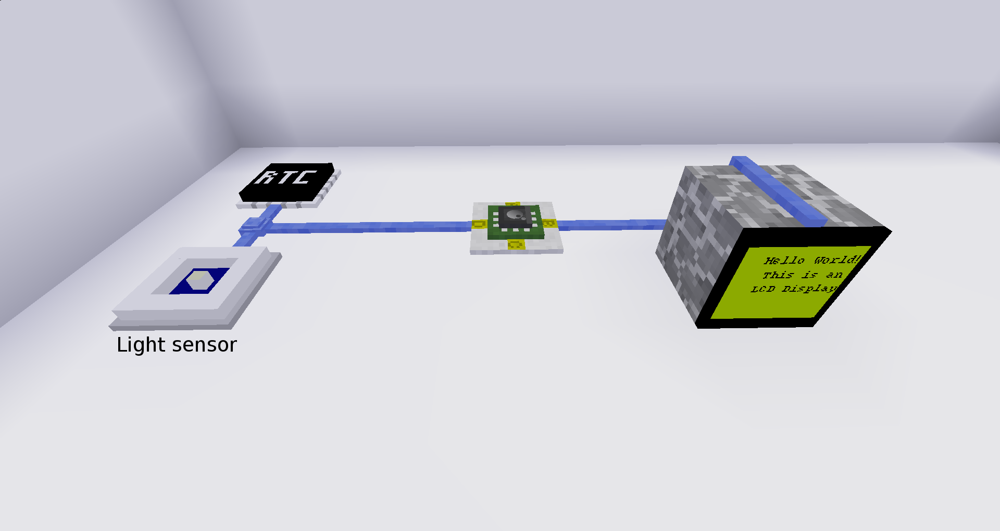

Digilines - Inter-Controller Communication

Digilines allows luacontrollers to talk to each other over a bus interface, just like what I²C, SPI or RS232 does for real microcontrollers. It also adds some additional features such as getting the accurate time of day with a real time clock, getting the light level using a light sensor and displaying text on an LCD screen. Have a look at the
minetest forum topic for more information or download it from the
GitHub page